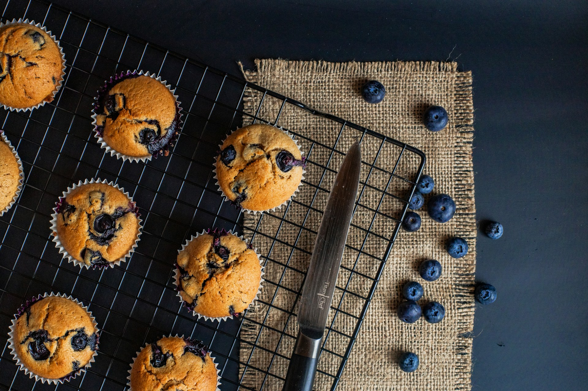

Muffin à la myrtille
Par Ôdélices
Présentation
Des muffins aux myrtilles bien moelleux et gourmands, aussi bons qu'au Starbicks ! Ajo blanc pour une recette plus gourmande grrrrr.
En savoir plus
Préparation
Ingrédients
- 260 g de farine
- 160 g de sucre
- 1/2 sachet de levure chimique
- 1 pincée de sel
- 2 oeufs
- 6 cl d'huile'
- 14 cl de lait
- 200 g de myrtilles
Étapes
- Préchauffez le four à 180°C (thermostat 6).
- Dans un saladier, tamisez ensemble la farine, le sucre, la levure et le sel.
- Dans un autre récipient, battez les oeufs avec un fouet. Ajoutez l’huile et le lait.
- Mélangez les deux préparations, juste pour qu’elles soient homogènes. Ajoutez les myrtilles et mélangez de nouveau mais ne travaillez pas trop la pâte.
- Répartissez la préparation dans 12 moules à muffins beurrés ou huilés.
- Enfournez 20 à 25 min.
- Laissez-les refroidir sur une grille.
La recette en vidéo